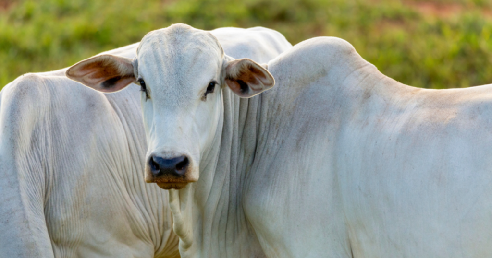
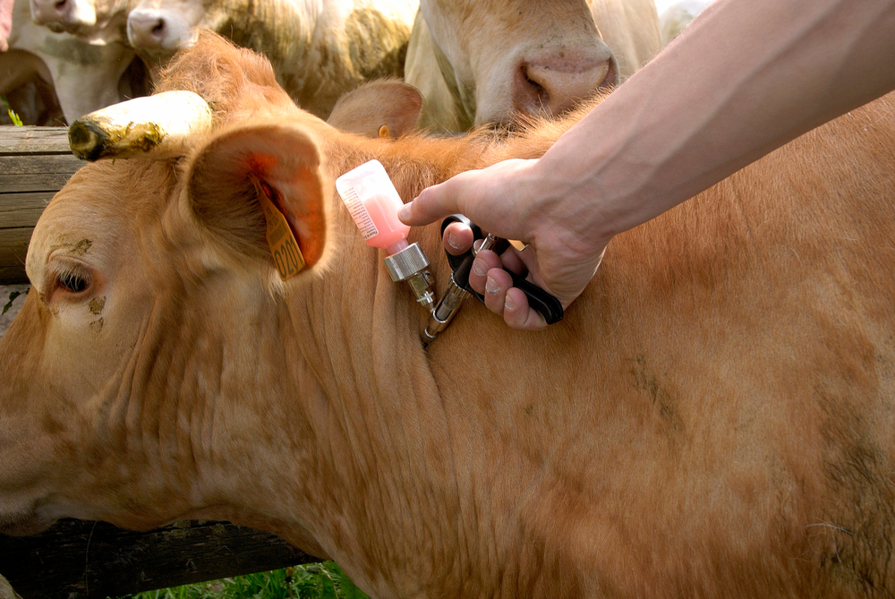
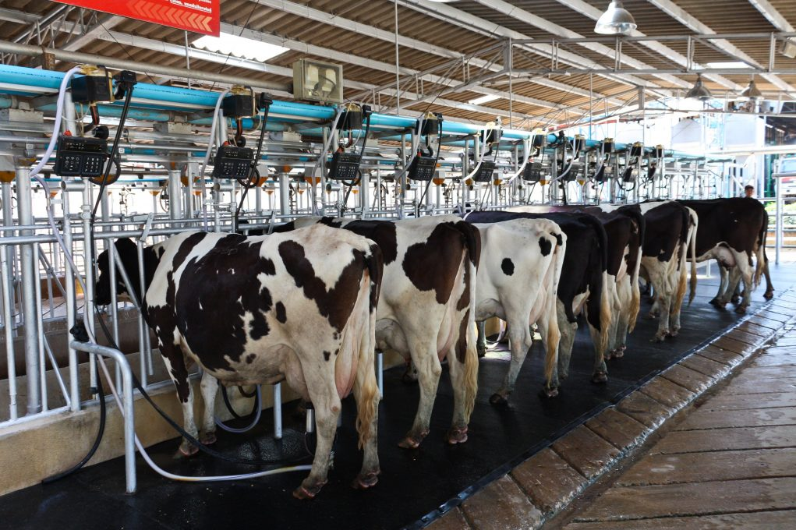

O AgroHAD foi pensado para facilitar o gerenciamento das informações do rebanho bovino leiteiro.
A plataforma permite organizar dados dos animais, acompanhar a vacinação e consultar informações relacionadas à produção de leite.
Centralizar as informações do rebanho facilita o acompanhamento dos animais e contribui para uma gestão mais organizada da propriedade.
Principais recursos

Cadastre e acompanhe informações dos bovinos, como nome, peso, idade, tamanho e raça.

Registre as vacinas aplicadas, doses, responsáveis e próximas datas de aplicação.

Acompanhe a produção média de leite dos animais e organize os dados produtivos do rebanho.
Acesse o sistema para consultar e gerenciar as informações dos animais.
Entrar no AgroHAD